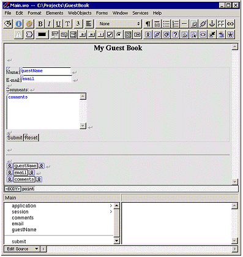

| PATH |

So far, you have a way for the guest to enter information and a way for the application to store that information. Now, the application needs to do something with the information.
For now, you'll have the application simply display the same information the user entered, in a slightly different format. This allows you to verify that you have correctly received the data. To do this, you'll add dynamic string elements (WOStrings) to the main page and bind them. In the next chapter, you'll use more complex forms of output.
A WOString is a dynamic element whose value is determined at runtime. It is shown as a small rectangle surrounded by two icons.
guestName variable
to the center rectangle of the WOString.Notice that the name guestName appears
inside the WOString, and the attribute pop-up menu doesn't appear.
The message "Connected guestName to value" appears in the upper-right
corner of the panel.
WebObjects provides this shortcut
for binding to the value attribute
of WOStrings because it is the attribute you most often want to
bind. The value attribute
signifies the string that will be displayed when the page is drawn.
If you want to bind a different attribute, you make a connection
to the left or right icon, and the attribute pop-up menu appears
as usual.
email and comments,
respectively.Note that it isn't necessary to resize the WOStrings as you did with the text fields. They expand at runtime to display the value of the variables to which they are bound.

In summary, when the user clicks the Submit button, a new
request-response cycle begins. WebObjects stores the data entered
in the dynamic form elements in the variables they are bound to
(guestName contains the
value in the Name field, email contains
the value in the E-mail field, and comments contains
the value in the Comments field). It then triggers the action method
bound to the action attribute
of the WOSubmitButton. The action method returns a page (in this
example, the same page). When the page is redrawn, the dynamic strings
at the bottom show the values entered by the user.
Now you are ready to test your application.
© 2001 Apple Computer, Inc.